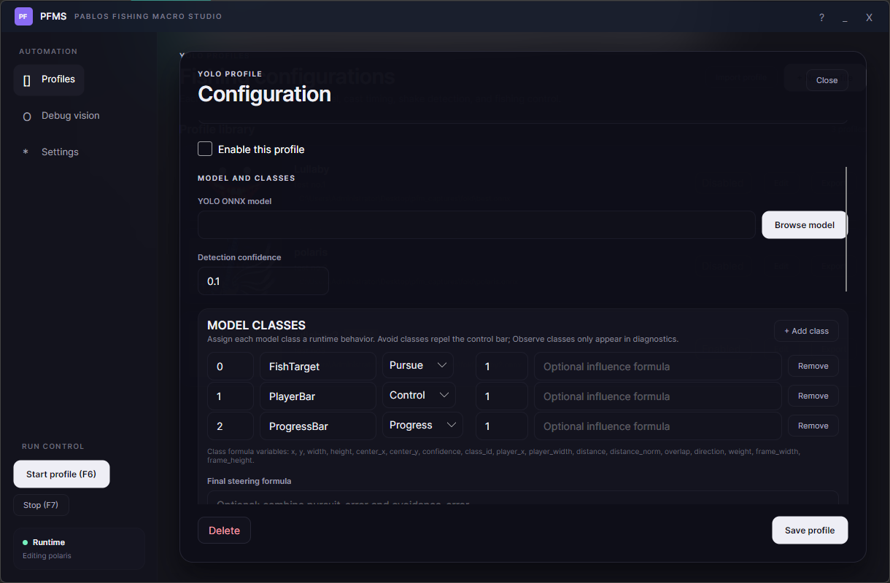
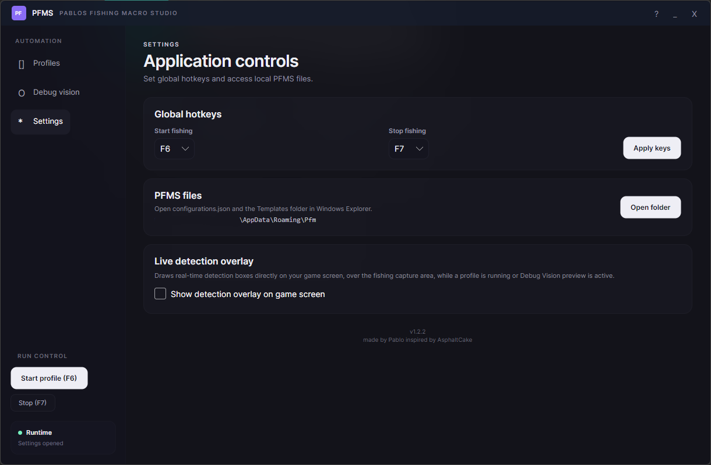
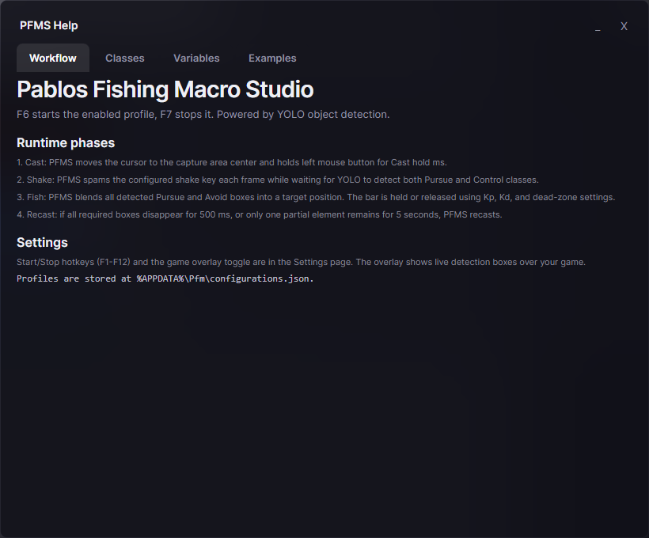

Interface
Inside PFMS
What you'll see when you open the app.




Windows app that fishes for you. YOLO detection reads the game and moves the rod.
Three steps, repeated every cast.
Holds the cast button, then throws the rod.
Spams a key until YOLO spots the target.
Tracks the fish and holds the bar. Loses it? Recasts on its own.
Built to match any fishing minigame.
Real-time model inference. Label your own classes.
Script rod behavior with simple formulas — no coding.
Clicks when the metronome arrow hits the zone.
Pursue, Avoid, Control, Progress, or Observe per class.
Shows detection boxes on top of your game.
Save multiple setups, each with its own model.
No file access, no networking, no reflection.
One Windows executable. No installer needed.
What you'll see when you open the app.



One model per game. Download the one you need, point PFMS at the file, and go.
All releases: github.com/Pabloxdl/pfms-models/releases →
Same syntax everywhere. Variables differ by layer.
Runs once per detected object of a class and produces how strongly it should pull or push the rod.
Combines every class's influence into one final steering value for the rod.
Decides the exact moment PFMS clicks when using TimingClick mode.